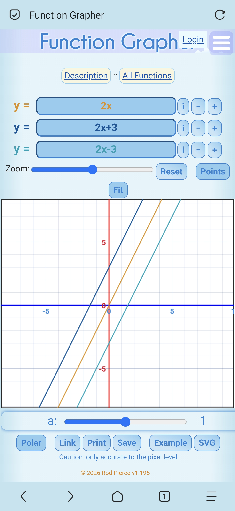
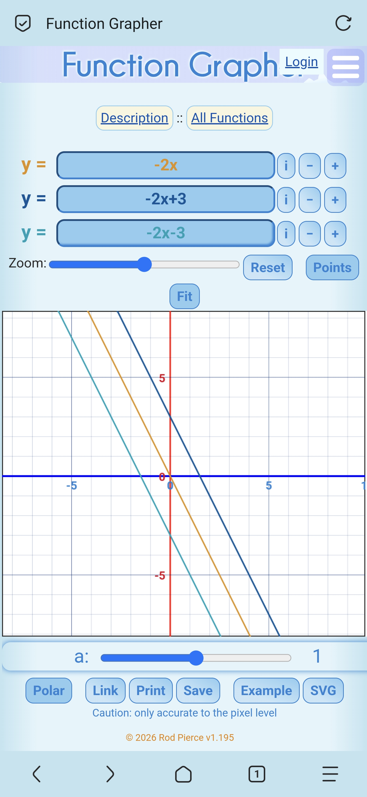

如图，当b>0时，直线y=kx+b可由直线y=kx向上平移b个单位长度而得，当b<0时，直线y=kx+b可由直线y=kx向下平移b个单位长度而得
当k>0时，y随x的增大而增大，当k<0时，y随x的增大而减小
| k的取值 | b的取值 | 经过象限 | 性质 |
|---|---|---|---|
| k>0 | b>0 | 一二三 | x↑y↑，呈上升趋势 |
| b=0 | 一三 | ||
| b<0 | 一三四 | ||
| k<0 | b>0 | 一二四 | x↑y↓，呈下降趋势 |
| b=0 | 二四 | ||
| b<0 | 二三四 |
图象与x轴交点公式(-(b/k),0)与y轴交点(0,b)

